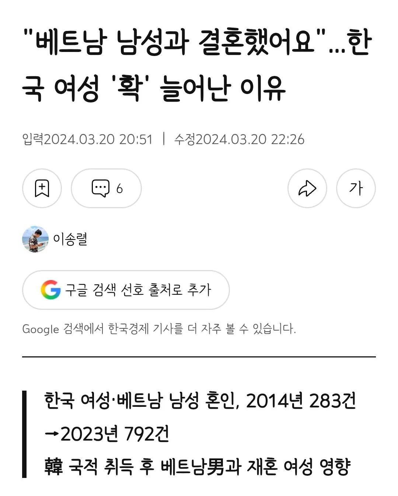

최근 베트남 남성과 결혼하는 한국인 여성이 큰 폭으로 늘고 있다. 한국 여성 중 상당 수는 한국인 남성과 결혼하면서 귀화한 베트남 여성이었다.
https://www.hankyung.com/article/2024032048957?utm_source=chatgpt.com
ㅡㅡㅡ
국적 먹튀한 베트남녀가 베트남 남자랑 결혼해서 생긴, 통계 착시ㅋㅋ
ㅅㅂㅋㅋ

최근 베트남 남성과 결혼하는 한국인 여성이 큰 폭으로 늘고 있다. 한국 여성 중 상당 수는 한국인 남성과 결혼하면서 귀화한 베트남 여성이었다.
https://www.hankyung.com/article/2024032048957?utm_source=chatgpt.com
ㅡㅡㅡ
국적 먹튀한 베트남녀가 베트남 남자랑 결혼해서 생긴, 통계 착시ㅋㅋ
ㅅㅂㅋㅋ
흉내한국인..? 한국인 흉내
흉한이었노
흉노같은 느낌이네
귀화했으면 한국인인건 맞지
재일조선인들도 그랬을듯
쟤네들 이름이야 뭐 한자음만 바꾸면 한국인이나 중국인 흉내 내기 쉽긴 하지
나같아도 그런다
흉내가 내지나?
택도없음 언어구조가 많이달라서 20년살아도 티남
저거도 이제 막혔다던데
베트남 여자한테 국적 주는 조건?이 엄격하게 바뀌었다며
베트남 여자만이 아니라 해외 이민 여성들 다 포함일껄? 저놈들 때문에 더 엄격해지는거지.
어차피 중국애들도 하던거고 베트남만 트집잡는건 이상하긴해도 뭐 잘못은 잘못이니
중국이랑 비빌수가 없는게 중국녀가 돈만보고 국결로 한국남자랑 결혼하는 일이 드뭄.
그만한 소득차이가 나지않기때문.
베트남이 돈이랑 국적취득만 보고ㅠ와서 국적딴뒤에 도망가는 비율이 월등히 높아서 그럼.
근데 국결한 개붕이들은 알겠지만 결혼한다고 국적 딸깍주는거아니야. 매년 이민국에 혼인관계증명서 들고 비자갱신하러 가야하고. 혼인기간이 길거나 아이가있으면 매년은아니더라도 삼년? 이런식으로 비자갱신은 해야해. 국적은 시험봐야 주는거고 시험이 쉽지도않아 영주권도 마찬가지고. 내가 아는건 이건데 베트남 여성은 적용되는 법이 다른거야?
국적 영주권 난민 우리나라 기준 개빡센대 잘몰더라
ㅎㅎ 알아도 모르는 척 하는 걸지도
요즘 강남때문에 귀화시험에 대해 좀 아는거지 아직도 국결하면 무조건 귀화되는줄 아는 사람들 많음
ㅋㅋㅋ 결혼하고 한국 계속 거주 2년만 하면 국적심사신청할 수 있고, 귀화시험이 쉽지 않기는 인생 걸고 대한민국 국민 자격증 따는건데 타이틀에 비해 개쉬운거지. 베트남 애들 기본적으로 국결 올 때 한국어 거진 배워오고 한국말 밖에 안쓰는 땅에 혼자 던져져서 2년을 굴러먹으면 병신도 한국어 늠. 거기에 학원의 나라, 시험의 나라 한국 답게 국적 심사용 학원, 연도별 분석 다 되어있고 개빠가사리 아닌 이상 남편 돈으로 반년~길어야 1년 준비하면 다 땀. 한 번에 못따도 재수해서 따면 됨 ㅋㅋㅋ 이역만리 외국땅에 듣보 아저씨한테 몸바칠 정도의 악깡인들에게 그게 조금이라도 어려울 거 같음?ㅋㅋㅋ
지랄한다 국결올때 한국어는 감사합니다 안녕하세요 정도이고 귀화시험 합격할정도 되면 진짜 한국인처럼 유창해야되고 역사 문화 언어 왠만한 한국인보다 잘알아야함. 일반 한국인 데려다 시험쳐도 죄다 떨어지는게 귀화시험임.
걍 어떻게든 혐오하려고 몸비틀기하는거임ㅋ
남자들은 없는 와중에서도 하향결혼이 가능한데 여자는 절대 못할거같더라 남자인 내가 생각해도그럼 진짜 학벌있고 멀끔한 동남아 아니면 절대 못할거같던데
지금처럼 국결하는사람 븅쉰취급할때 가는게 유리함 막말로 여기 댓글 분위기좋아지면 그건 레드오션임
븅쉰취급할때 가서 미녀 데리고오면 남들이 무슨말을 하든 무슨상관이냐? 어차피 내 아내가 이쁘면 아가리 닥치고 부러워할텐데
도망에대해서 말하자면
내가 국결할때 동기가 두번했음 처음결혼한여자가 도망가서 다시 같은업체에 원가로 함
도망가고나서 외모 덜보고 하니까 잘 살더라 그 동기는 나이많고 머리까지고 뚱뚱했음 외모가 좋지못함
애초에 도망갈 생각하고 온다기보다 살다보니 안되겠다 싶어서 도망가는경우가 더 많다고함 [현장직한테 들은얘기임]
어차피 안할놈은 안할꺼고 할 생각있으면 여기저기 다 붙어먹다가 실패해서 가지말고 결혼 적령기 되면 가서 해라
그게 더 유리하다. [이쁘고 말 잘듣는 여성을 만날확률이]
경험담 ㄷㄷ
그니까 나도 국결은 그냥 도태 시골농촌 독거중년이나 하는줄 알앗는데
서울에서 나고자라 멀쩡한 직업가진 지인이 연애몇번 하다가 안되겟는지 30후반에 국결햇는데 (외모도 멀쩡함. 평점한 서울직장인) 20대 어린 베트남 여자 결혼해서 잘사는거 보니 부럽진 않은데 나쁜선택은 아닌거 같다 인식이 바뀜. 주변에 결혼하고싶은데 자꾸 연애실패하고 40줄 간 지인들 해보라 하는데 아직 인식이 안좋긴 하더라 ㅋㅋㅋ
이 참에 버러지 동남아애들 솎아낼 계기가 되면 좋겠네
한국 들어와서 시골 남자들 단물만 쪽 빨아 먹고 국적 세탁한 다음에 주한 미군이랑 결혼하는 케이스도 많음
베트남애들 지들 베트남 사람인거 안들킬려고 성도 김씨나 박씨로 바꾸고 흉내한국인 하고다니더라